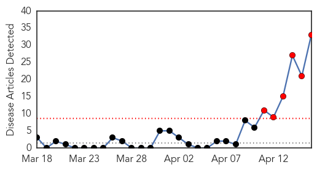
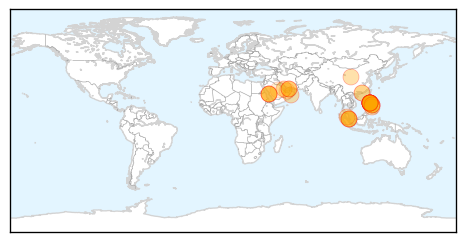
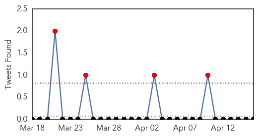
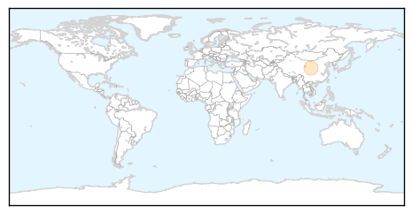

MERS
30-Day Web Trend
6 alerts, 0 warnings

30-Day Twitter Trend
2 alerts, 0 warnings

Article Locations
Article Confidences

Top Articles:
- 1.000
- Malaysia confirms first MERS-CoV fatality
- 0.999
- Saudi- Govt makes efforts to find cure for CoV
- 0.998
- Mers coronavirus: first death recorded in Asia and Filipino health worker isolated
- 0.998
- WHO experts to probe Saudi MERS outbreak
- 0.997
- Saudi reports new MERS death
- 0.997
- OFW brings MERS virus to Philippines
- 0.996
- No need for travel curbs over Mers, says World Health Organisation
- 0.996
- MERS cases reach Far East; Saudi Arabia reports 6 more
- 0.995
- Mers coronavirus: Filipino paramedic who died in UAE infected 10 colleagues, says the WHO
- 0.995
- DOH announces first case of MERS virus infection in PH
- 0.995
- Aquino moves to stop MERS-CoV from spreading in the Philippines
- 0.994
- 3 new Mers Coronavirus cases confirmed in UAE; Health Authority Abu Dhabi calls for calmHealthcare
- 0.994
- Malacanang: Philippine government issues MERS advisory
- 0.994
- WHO Reports Uptick in MERS
- 0.993
- ‘Avoid close contact with infected’Healthcare
- 0.993
- OFW from UAE tests positive for MERS-CoV
- 0.992
- Headlines, News, The Philippine Star
- 0.992
- Filipino from UAE who returned to PH a MERS-CoV 'carrier'
- 0.992
- Filipino from UAE who returned to PH a MERS-CoV 'carrier'
- 0.991
- No travel restrictions to Middle East amid MERS-CoV scare
- 0.991
- Measures set against entry of MERS-CoV
- 0.989
- First MERS death reported in M’sia
- 0.984
- Johor man first person in Asia to succumb to MERS - Nation
- 0.983
- Residents call for increased Mers awarenessHealthcare
- 0.982
- Health warning for passengers of March 29 Turkish Airlines flight - Nation
- 0.978
- Ten additional overseas cases of Middle East Respiratory Syndrome closely monitored by DH
- 0.975
- Malaysia reports first Asian death from MERS virus
- 0.972
- Singapore on alert against respiratory virus
- 0.929
- Malaysia reports first Asian death from Mers virus
- 0.924
- MERS coronavirus makes first appearance in Asia: Malaysia, Philippines report MERS-CoV cases
- 0.662
- DOH issues official statement on confirmed case of MERS-CoV
- 0.570
- Freeman Opinion, The Freeman Sections, The Freeman
- 0.543
- الاخبار المصورة
Top Tweets:
-
No tweets found for Apr 16, 2014
Swine Flu
30-Day Web Trend
0 alerts, 0 warnings
30-Day Twitter Trend
4 alerts, 0 warnings

Article Locations
Article Confidences

Top Articles:
Top Tweets:
-
No tweets found for Apr 16, 2014